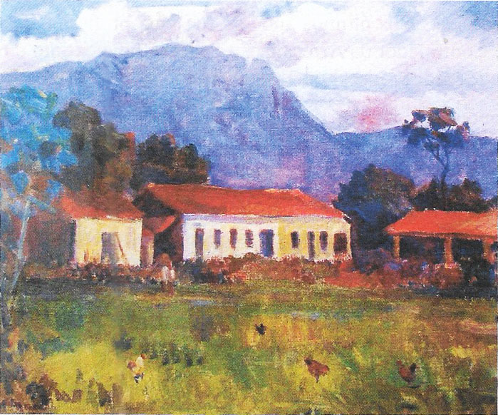

(Página em construção!)
|
Sua vida como funcionário público teve início em 1943, quando foi nomeado para o cargo de Escrivão da Coletoria das Rendas Federais, em Loncrina, sendo removido para Morretes no ano seguinte. Dotado, desde jovem, do dom da palavra, tinha muita facilidade para se expressar tanto por escrito como oralmente. Falava em público com frequência, algumas vezes por delegação de entidades, e em outras por solicitação de amigos. Em 1945, ao findar a Segunda Guerra, foi o orador oficial na homenagem prestada aos Morretenses, ex-pracinhas da Força Expedicionária Brasileira, que voltavam da Itália Sempre ligado aos interesses da coletividade, participou da criação do Ginário Municipal Rocha Pombo, em 1949, e foi por dez anos, de 1950 a 1960, Inspetor de Ensino daquele estabelecimento.. Foi um dos grandes idealizadores do Hospital e Maternidade de Morretes, inaugurado em 1949, e por muitos anos membro da sua diretoria. Participou com entusiasmo da criação, em Curitiba, do Centro Morretense, inaugurado na capital no dia 22 de maio de 1951. Convidado por Eolo Brambilla Pinto e pelo professor Raul Gomes colaborou intensamente na instalação e funcionamento da Operação Paraná na Lutra contra o Analfabetismo (OPALA). Fez parte do grupo de cidadãos que batalharam pela criação da Escola Técnica de Comércio de Morretes - 1954, e foi seu primeiro Diretor. Eleito para o cargo de Vereador, pela primeira vez, em 3 de outubro de 1955, teve gestão atuante entre seus pares e participou de outras legislaturas. Em 1957, participou da Comissão dos Festejos do Centenário de Rocha Pombo. Nascido de família católica nunca se distanciou da religião dos seus pais e era colaborador incansável das festas e campanhas em favor da igreja, seja na paróquia de Morretes, seja nas capelas dos sítios da cidade. Foi membro da primeira diretoria da Pia União de Santo Antônio, que criou o Orfanato-Educandário Santo Antônio. Sempre imbuído do ideal de servir, prestou piedosos serviços na Irmandade de Nossa Senhora do Porto. Trabalhou como Guarda-Livros na firma de Luiz Brambilla e durante muitos anos como Contador da firma Irmão Malucelli. Como funcionário público, exerceu o cargo de Escrivão e depois de Coletor em Palmeiras, Morretes, São José dos Pinhais e Curitib a. Em 1961, promovido a Coleto Federal, ocupou o cargo até 1964, quando foi nomeado Assessor Técnico e Substituto Eventual do Delegado Regional de Arrecadação. Nos últimos anos da sua vida profissional, ocupou o cargo de Controlador da Arrecadação Federal, hoje extinto e unificado ao cargo de Auditor Fiscal do Tesouro Nacional. Formou-se Contador pela Academia Paranaense de Comércio e, em 1968, Bacharel em Direito pela Faculdade de Direito de Curitiba. Mesmo residindo em Curitiba continuou se interessando pelas coisas de Morretes, pelas pesquisas históricas, que era muito do seu gosto e que justificou o seu ingresso como sócio efetivo do Instituto Histórico e Geográfico do Paraná. Recebeu diploma de sócio benemérito da Sociedade Beneficiente e Recreativa dos Operários. Em 31 de outubro de 1977, quando já estava residindo em Curitiba, foi-lhe concedido o título de Cidadão Benemérito de Morretes. Nessa ocasião, em que discursou emocionado e agradecido, fezum retrospecto de suas atividades em Morretes. Agraciado como Sócio Benemérito do Iate Clube de Morretes, recebeu o diploma em 26 de setembro de 1981. No que diz respeito à sua vida entre os colegas da Receita Federal, era um líder nato na procura de melhorias para a sua classe. Foi um dos idealizadores e colaboradores da Colônia de Férias dos Funcionários da Receita Federal, o São Mateus Clube, em Matinhos, da qual foi Presidente, e também presidiu a Associação Paranaense dos Exatores Federais. Faleceu aos 68 anos de idade, na cidade de Curitiba, no dia 15 de junho de 1982. Seu corpo foi sepultado no Cemitério Santa Esperança, em Morretes. No dia 16 de junho do mesmo ano, por solicitação do Deputado Nelson Buffara, foi inserido um voto de pesarna ata dos trabalhos da Assembléia Legislativ do Estado do Paraná, pelo falecimento de Marcos Luiz De Bona. Em 6 de setembro, também em 1982, a Câmara Municipal de Morretes aprovou e o seu Prefeito Marcy Alves Pinto sancionou a Lei nº 787, que denominou de Marcos Luiz De Bona a rua que também é conhecida como Estrada do Anhaia, local do seu nascimento, e que foi retratado pelo seu irmão Theodo na tela Casa do Pintor.  Casa do Pintor - Anhaia - Morretes Tela de Th. De Bona REFERÊNCIAS: |